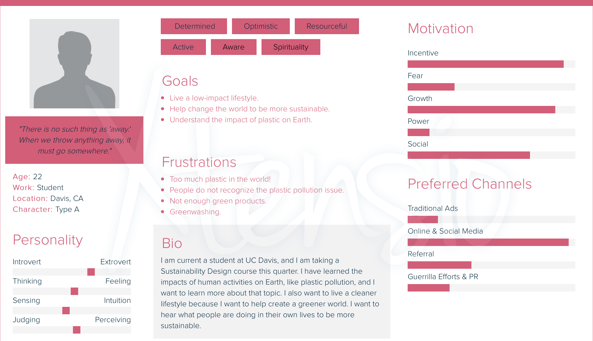
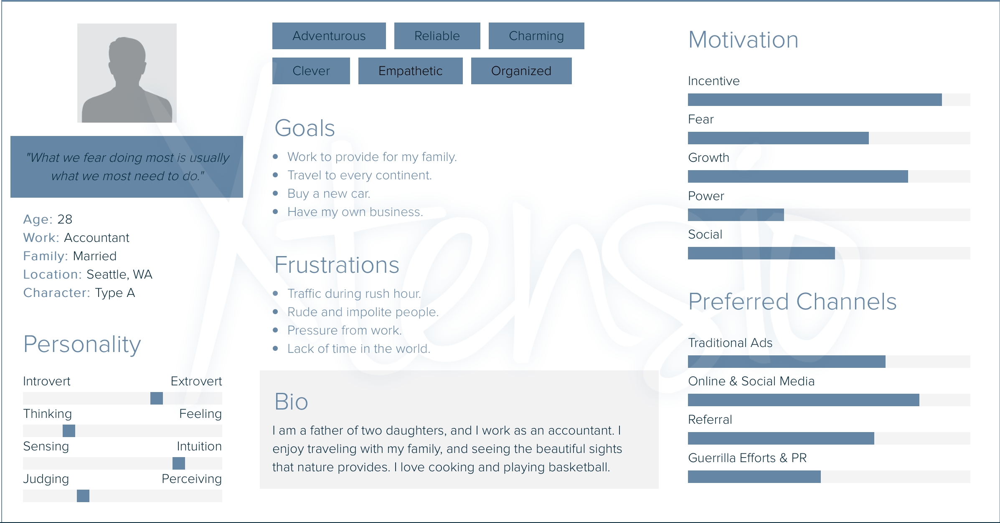

Audience Research
 For my user research, I created two different personas with Xtensio. Since my topic is on sustainability, I created a persona (left image) of a user who is environmentally aware, and they want to learn how to live a more sustainable life. The second persona (right image) is an average person who has the usual daily activities and worries. I thought that since these two personas are the probably two main categories of users that will be visiting the website, I wanted to see what their goals and personalities are. This helps me know what the users will be looking for when they go on my website, and I can create content that will fit their needs. By creating these personas, I have a better understanding of what I want my final product to look like and do.